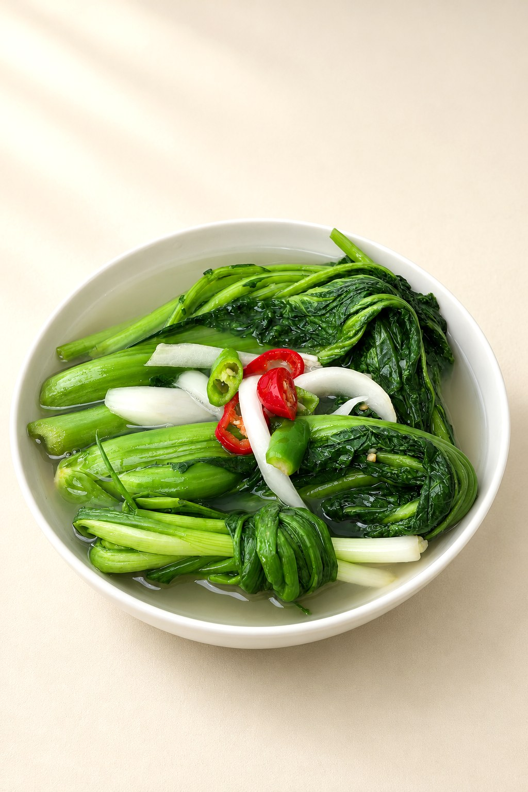

11월 22일 김치의 날
 연출 이미지연출 이미지
연출 이미지연출 이미지 연출 이미지
연출 이미지2020년 김치산업 진흥법이 개정되며 매년 11월 22일이 ‘김치의 날’이 됐어요. 식품으로는 처음 생긴 법정기념일이에요. 이제는 미국과 영국 등 해외 여러 지역에서도 이날을 김치의 날로 기념해요.
 연출 이미지
연출 이미지날이 추워 김치가 잘 익지 않는 평안도에선 소금을 적게 넣고 국물을 넉넉히 부어, 심심하면서 시원한 김치를 즐겼어요. 동치미와 백김치가 대표적이고, 동치미 국물에 메밀국수를 말아 먹기도 했어요.
 연출 이미지
연출 이미지무와 배추를 얇고 네모지게 썰어 가볍게 절인 뒤 국물을 부어요. 채소를 얇게 써는 만큼 비교적 빨리 맛이 들어, 담가서 금방 먹는 물김치예요.
 그리운밥상 동치미
그리운밥상 동치미전라도에선 동치미를 ‘싱건지’라고도 불러요. 나주 동치미가 이름난 곳이죠. 그리운밥상 후기에도 “시어머니의 싱건지가 그리웠다”는 이야기가 있었어요.

그리운밥상 갓물김치 · 출시 예정갓김치 하면 여수 돌산갓이죠. 여수 돌산갓과 돌산갓김치는 2010년 지리적표시에 등록됐어요. 그 알싸한 갓을 맑은 국물에 담그면 갓물김치가 돼요.
연출 이미지 연출 이미지
연출 이미지같은 무, 같은 소금물이어도 지역마다 이름도 맛도 달라요. 어릴 적 먹던 물김치 이야기를 댓글로 들려주세요. 다음 이야기에 소개할게요.
 그리운밥상 동치미 · 백열무김치
그리운밥상 동치미 · 백열무김치